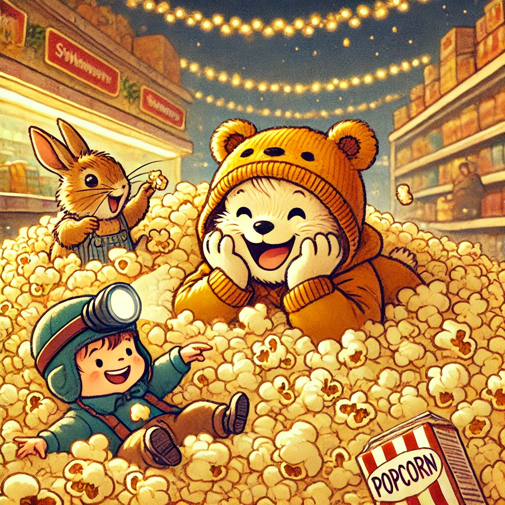

Es war einmal ein Wiesel namens Winnie, das oben auf dem Knabbereienregal eines Supermarkts in Leknes auf den Lofoten wohnte. Winnie war gerade auf einem ihrer gemütlichen Spaziergänge durch den Supermarkt, als ihr ein neuer und aufregender Geruch in die Nase stieg. Süß und schwer und warm legte er sich auf ihre Nase, die dem kleinen Wiesel die Richtung wies.
Wie verzaubert tapste Winnie Richtung Zauberduft. Und da stand sie. Groß, golden und voller kleiner süßer Wolken: die Popcornmaschine. Winnie hatte Biep davon erzählen hören, aber sie hatte eine solche Traummaschine für ein Märchen gehalten. Mit Staunen in den Augen umrundet sie den Kasten.
Unter Anstrengung all ihrer Kräfte zog sie sich und ihren kleinen Bauch - der auffällig grummelte - an der Seite hoch und stand direkt vor einem langen Metallhebel mit einem roten Stern am Ende. Winnie, wie sie nun mal ist, dachte nicht einmal eine Sekunde nach und hängte sich mit ihrem ganzen Gewicht an den Hebel. Mit einem Quietschen schwang er nach unten und Winnie konnte gerade noch abspringen. Was dann kam, hätte Winnie sich in ihren wildesten Träumen nicht ausmalen können: der Zaubertopf mit den goldenen Zuckerwolken quoll über.
Links und rechts purzelten das duftende Popcorn herunter. Winnie rannte mit ausgestreckten Armen hin und her und lachte vor Glück. Angezogen vom Freundengeschrei, bogen Herr Hase und Biep um die Ecke. Mit großen Augen staunten sie über das Feld aus gelben Zuckerknubbeln, das immer größer und dichter wurde. Winnie tolle darin herum, als sei es Schnee. Natürlich hielt die beiden Freunde nichts mehr und sie warfen sich hinein in die Zuckerschlacht.
